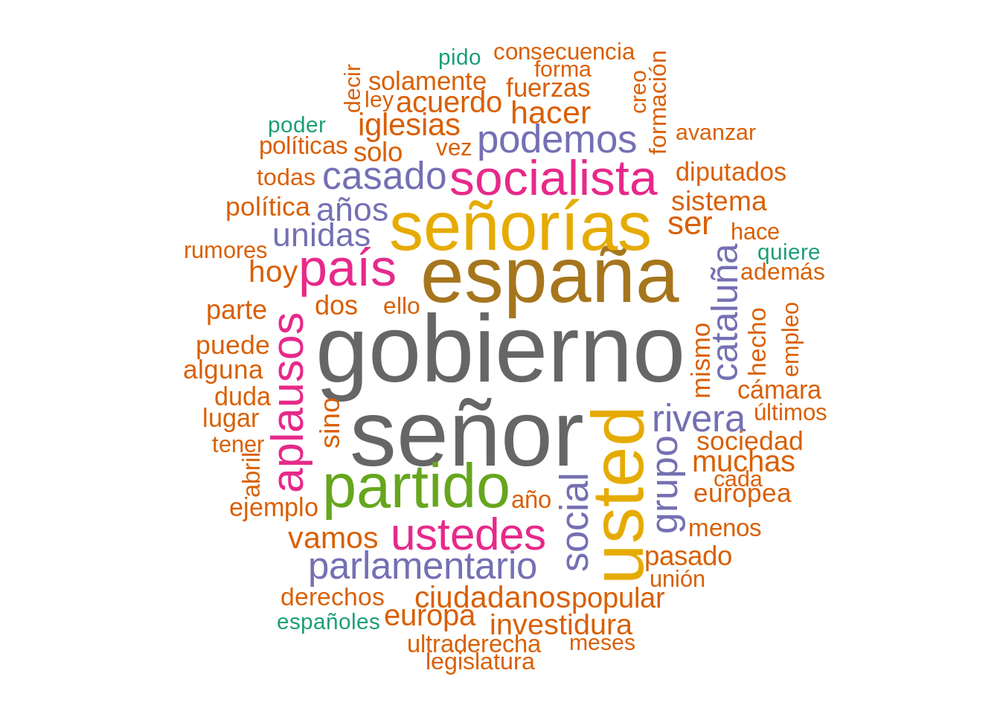
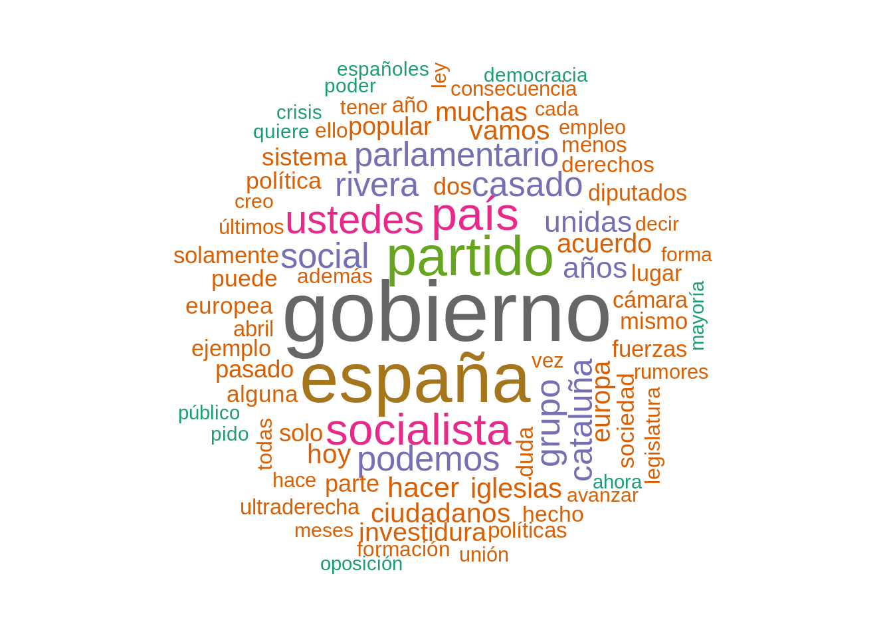
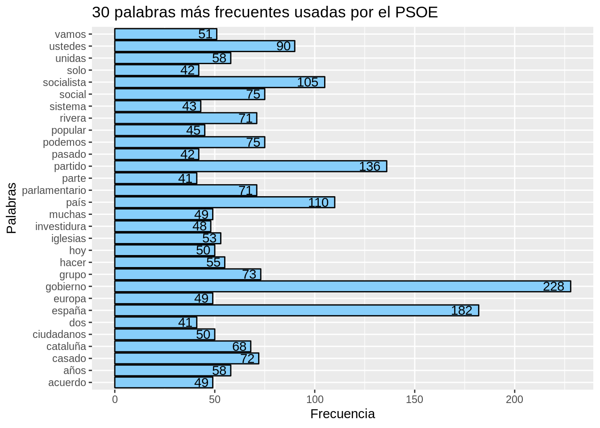
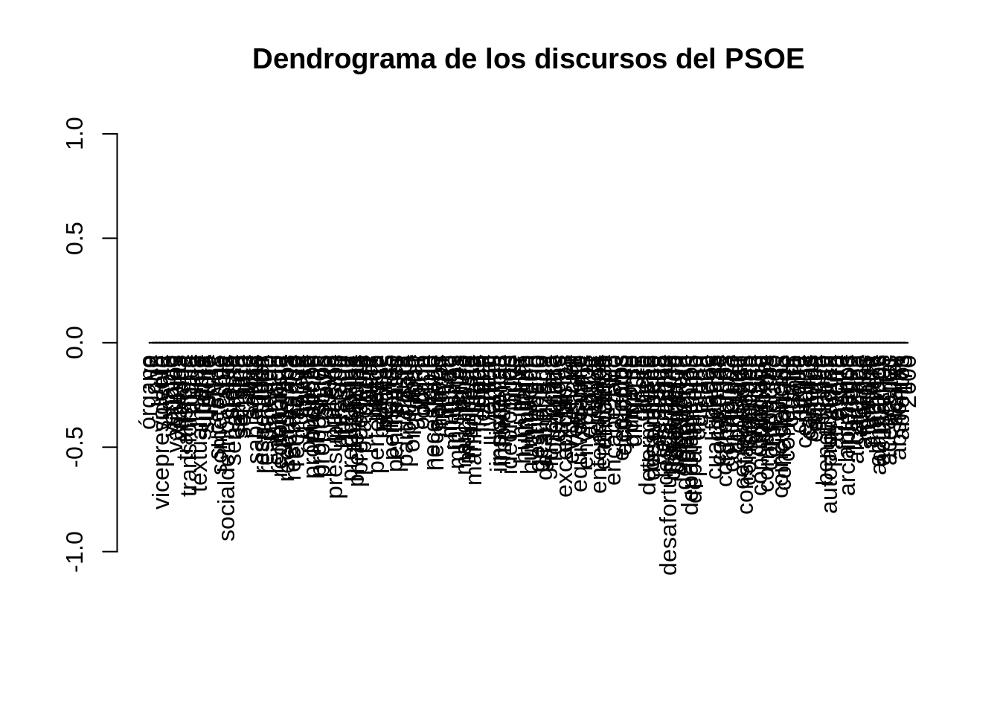

En este script, vamos a realizar minería de textos sobre los discursos de los principales representantes de los partidos políticos con representación en el congreso de los diputados de España.
Comenzamos cargando las librerias que usaremos en el resto del script.
library(tm)## Loading required package: NLPlibrary(dplyr)##
## Attaching package: 'dplyr'## The following objects are masked from 'package:stats':
##
## filter, lag## The following objects are masked from 'package:base':
##
## intersect, setdiff, setequal, unionlibrary(tidytext)
library(SnowballC)
library(wordcloud)## Loading required package: RColorBrewerlibrary(ggplot2)##
## Attaching package: 'ggplot2'## The following object is masked from 'package:NLP':
##
## annotatelibrary(dplyr)
library(cluster)Ahora vamos a crear nuestro corpus, para ello obtendremos las intervenciones de esta web http://www.congreso.es/portal/page/portal/Congreso/PopUpCGI?CMD=VERLST&BASE=pu13&FMT=PUWTXDTS.fmt&DOCS=1-1&QUERY=%28DSCD-13-PL-5.CODI.%29#(Página9). Es necesario para obtener mayor valor de los datos, crear un dataframe donde tendremos por un lado el autor y por otro el texto.
Pasamos los factores del texto a caracteres para poder aplicar minería de textos.
intervenciones$Discurso<-as.character(intervenciones$Discurso)Vamos a intentar enriquecer el dataset con la orientación política y el nombre del partido en funcion del autor.
intervenciones$Partido <- "PSOE"
intervenciones$Partido[intervenciones$Autor == "Pablo Casado"] <- "PP"
intervenciones$Partido[intervenciones$Autor == "Albert Rivera"] <- "Ciudadanos"
intervenciones$Partido[intervenciones$Autor == "Pablo Iglesias"] <- "Podemos"
intervenciones$Partido[intervenciones$Autor == "Jaume Asens"] <- "Podemos"
intervenciones$Partido[intervenciones$Autor == "Alberto Garzon"] <- "Podemos"
intervenciones$Partido[intervenciones$Autor == "Yolanda Diaz"] <- "Podemos"
intervenciones$Partido[intervenciones$Autor == "Santiago Abascal"] <- "VOX"
intervenciones$Partido[intervenciones$Autor == "Gabriel Rufian"] <- "ERC"
intervenciones$Partido[intervenciones$Autor == "Aitor Esteban"] <- "PNV"
intervenciones$Partido[intervenciones$Autor == "Laura Borras"] <- "Junts per Catalunya"
intervenciones$Partido[intervenciones$Autor == "Oskar Matute"] <- "Bildu"
intervenciones$Partido[intervenciones$Autor == "Ana Oramas"] <- "Coalición Canaria"
intervenciones$Partido[intervenciones$Autor == "Carlos Garcia"] <- "Compromis"
intervenciones$Partido[intervenciones$Autor == "José María Mazón"] <- "PRC"
intervenciones$Partido<-as.factor(intervenciones$Partido)Vamos añadir tambien la orientación:
intervenciones$Ideologia <- "Centro Izquierda"
intervenciones$Ideologia[intervenciones$Autor == "Pablo Casado"] <- "Derecha"
intervenciones$Ideologia[intervenciones$Autor == "Albert Rivera"] <- "Centro Derecha"
intervenciones$Ideologia[intervenciones$Autor == "Pablo Iglesias"] <- "Izquierda"
intervenciones$Ideologia[intervenciones$Autor == "Jaume Asens"] <- "Izquierda"
intervenciones$Ideologia[intervenciones$Autor == "Alberto Garzon"] <- "Izquierda"
intervenciones$Ideologia[intervenciones$Autor == "Yolanda Diaz"] <- "Izquierda"
intervenciones$Ideologia[intervenciones$Autor == "Santiago Abascal"] <- "Extrema Derecha"
intervenciones$Ideologia[intervenciones$Autor == "Gabriel Rufian"] <- "Izquierda Independentista"
intervenciones$Ideologia[intervenciones$Autor == "Aitor Esteban"] <- "Centro Derecha"
intervenciones$Ideologia[intervenciones$Autor == "Laura Borras"] <- "Izquierda Independentista"
intervenciones$Ideologia[intervenciones$Autor == "Oskar Matute"] <- "Izquierda Independentista"
intervenciones$Ideologia[intervenciones$Autor == "Ana Oramas"] <- "Izquierda"
intervenciones$Ideologia[intervenciones$Autor == "Carlos Garcia"] <- "Izquierda"
intervenciones$Ideologia<-as.factor(intervenciones$Ideologia)Vamos a comenzar analizando el discurso del PSOE.
corpusPSOE<- Corpus(VectorSource(intervenciones$Discurso[intervenciones$Partido=="PSOE"]))
corpusPSOE## <<SimpleCorpus>>
## Metadata: corpus specific: 1, document level (indexed): 0
## Content: documents: 15Ahora vamos a crear una función de limpieza de datos, para poder reutilizarla luego con otros discursos políticos. Nuestra función llevará a cabo las tareas típicas de pre-procesado en minería de textos:
Es importante mencionar que no eliminaremos números, pues las fechas, articulos de la constitución y demas información es relevante para este conjunto de datos en concreto.
clean <- function (corpus){
corpus <- tm_map(corpus, stripWhitespace)
corpus <- tm_map(corpus, removePunctuation)
corpus <- tm_map(corpus, content_transformer(tolower))
corpus <- tm_map(corpus, removeWords, c(stopwords("es")))
corpus
}
corpusPSOE<-clean(corpusPSOE)## Warning in tm_map.SimpleCorpus(corpus, stripWhitespace): transformation
## drops documents## Warning in tm_map.SimpleCorpus(corpus, removePunctuation): transformation
## drops documents## Warning in tm_map.SimpleCorpus(corpus, content_transformer(tolower)):
## transformation drops documents## Warning in tm_map.SimpleCorpus(corpus, removeWords, c(stopwords("es"))):
## transformation drops documentsVamos a comenzar con una nube de terminos sobre los discursos del PSOE
wordcloud(corpusPSOE, max.words = 80, random.order = F, colors = brewer.pal(name = "Dark2", n = 8)) Hay algunas palabras vacias muy evidentes que se pueden desgranar del dominio como: señor, señorias, aplausos, usted, ser… las eliminaremos en la función y volveremos a pintar la nube de palabras.
clean <- function (corpus){
corpus <- tm_map(corpus, stripWhitespace)
corpus <- tm_map(corpus, removePunctuation)
corpus <- tm_map(corpus, content_transformer(tolower))
corpus <- tm_map(corpus, removeWords, c(stopwords("es"), "señor", "señorías", "aplausos", "usted",
"ser", "pues", "tal", "tan", "así", "dijo", "cómo", "sino",
"entonces", "aunque", "don", "doña"))
corpus
}
corpusPSOE<-clean(corpusPSOE)## Warning in tm_map.SimpleCorpus(corpus, stripWhitespace): transformation
## drops documents## Warning in tm_map.SimpleCorpus(corpus, removePunctuation): transformation
## drops documents## Warning in tm_map.SimpleCorpus(corpus, content_transformer(tolower)):
## transformation drops documents## Warning in tm_map.SimpleCorpus(corpus, removeWords, c(stopwords("es"),
## "señor", : transformation drops documentswordcloud(corpusPSOE, max.words = 80, random.order = F, colors = brewer.pal(name = "Dark2", n = 8))
Ya tenemos una idea del discurso del partido, ahora Vamos a obtener las palabra más frecuentes, para ello necesitaremos una matriz de frecuencia de términos.
PSOE_dtm<- TermDocumentMatrix(corpusPSOE)
PSOE_mat<-as.matrix(PSOE_dtm)
PSOE_mat <- PSOE_mat %>% rowSums() %>% sort(decreasing = TRUE)
PSOE_mat <- data.frame(palabra = names(PSOE_mat), frec = PSOE_mat)Ahora ya tenemos las palabras y la suma de sus apariciones, es decir, su frecuencia. Haciendo uso de esa matriz podremos dibujar un gráfico de frecuencias:
PSOE_mat[1:30, ] %>%
ggplot(aes(palabra, frec)) +
geom_bar(stat = "identity", color = "black", fill = "#87CEFA") +
geom_text(aes(hjust = 1.3, label = frec)) +
coord_flip() +
labs(title = "30 palabras más frecuentes usadas por el PSOE", x = "Palabras", y = "Frecuencia")
Vamos a buscar asociaciones entre palabras, para ello usaremos las relacionadas con los partidos políticos:
findAssocs(PSOE_dtm, terms = c("ciudadanos", "iglesias", "ultraderecha", "casado", "investidura", "popular", "rivera", "podemos"), corlimit = .80)## $ciudadanos
## importante madrid democracia
## 0.96 0.95 0.93
## bien candidatura civiles
## 0.92 0.91 0.91
## cuya diferencia digna
## 0.91 0.91 0.91
## eutanasia huir igualmente
## 0.91 0.91 0.91
## lleno revisar según
## 0.91 0.91 0.91
## siguiendo apuntalar bloqueada
## 0.91 0.90 0.90
## colectivo constitucionalismo contribuye
## 0.90 0.90 0.90
## cree cuestionar deseo
## 0.90 0.90 0.90
## discursos evasión faltar
## 0.90 0.90 0.90
## lacerantes llamar marcos
## 0.90 0.90 0.90
## marzo maternidad muerte
## 0.90 0.90 0.90
## padres piensan teléfono
## 0.90 0.90 0.90
## 000 decir diversidad
## 0.89 0.89 0.89
## marcha públicos referencia
## 0.89 0.89 0.89
## todas anterior atrás
## 0.89 0.88 0.88
## ciclo euros idea
## 0.88 0.88 0.88
## trabajadoras verde aquellas
## 0.88 0.88 0.87
## aquí corrupción mandato
## 0.87 0.87 0.87
## dar forma personal
## 0.86 0.86 0.86
## carreras ciudad consecuencia
## 0.85 0.85 0.85
## hombre institucional quinto
## 0.85 0.85 0.85
## riesgo tener lgtbi
## 0.85 0.85 0.84
## pido reconocer semanas
## 0.84 0.84 0.84
## territorios derechos educativo
## 0.84 0.83 0.83
## menos mismo vez
## 0.83 0.83 0.83
## cada datos democrática
## 0.82 0.82 0.82
## familias finalmente formación
## 0.82 0.82 0.82
## hace mal mejor
## 0.82 0.82 0.82
## población política sufre
## 0.82 0.82 0.82
## aumento autónomos comunicación
## 0.81 0.81 0.81
## económico estabilidad feminismo
## 0.81 0.81 0.81
## género plan poder
## 0.81 0.81 0.81
## puesto cuales solo
## 0.81 0.80 0.80
## violencia
## 0.80
##
## $iglesias
## vicepresidencia agricultura conozco contenido
## 0.94 0.94 0.94 0.94
## dirigir equipo impedir prácticamente
## 0.94 0.94 0.94 0.94
## áreas presidente gasto ministerio
## 0.94 0.91 0.90 0.89
## izquierdas ofrecimos dije sanidad
## 0.89 0.87 0.86 0.84
## negociación controlar hacienda asumir
## 0.83 0.83 0.83 0.82
## quería exigía
## 0.82 0.81
##
## $ultraderecha
## apoyados pactar visto cordón planteamiento
## 0.94 0.94 0.94 0.92 0.88
## puesto murcia señora
## 0.84 0.84 0.81
##
## $casado
## integridad planteado echar protestas rumores dependa
## 0.92 0.92 0.89 0.87 0.83 0.80
##
## $investidura
## gobierno incorporación embargo unir
## 0.82 0.82 0.80 0.80
##
## $popular
## planteado rumores intervención
## 0.87 0.83 0.80
##
## $rivera
## 176 abajo abandonado abrazarse accidente
## 0.99 0.99 0.99 0.99 0.99
## aconteció acordamos acostumbrados adiós adolescente
## 0.99 0.99 0.99 0.99 0.99
## adversario afijos alegro aplauda apresurarse
## 0.99 0.99 0.99 0.99 0.99
## aprobados arrimadas atado aznarista azules
## 0.99 0.99 0.99 0.99 0.99
## banda bloquea caprichoso cargos cauce
## 0.99 0.99 0.99 0.99 0.99
## centrismo chaquetas coger cogido colación
## 0.99 0.99 0.99 0.99 0.99
## colegios come comer comulgan conmigo
## 0.99 0.99 0.99 0.99 0.99
## conservador contraviniendo convertido cuestionando cuántos
## 0.99 0.99 0.99 0.99 0.99
## darnos declararse dejaron deje demostrar
## 0.99 0.99 0.99 0.99 0.99
## descalifica despachado despachó dirigido diría
## 0.99 0.99 0.99 0.99 0.99
## disquisiciones doscientas díaz díez echado
## 0.99 0.99 0.99 0.99 0.99
## echara educando entra equivocando escucha
## 0.99 0.99 0.99 0.99 0.99
## especulaciones especulado etiqueta etiquetas facilitado
## 0.99 0.99 0.99 0.99 0.99
## fascista fascistas feministas formado francesc
## 0.99 0.99 0.99 0.99 0.99
## frase funciona fundadores ganando gay
## 0.99 0.99 0.99 0.99 0.99
## golpista grave gusta hable huyeron
## 0.99 0.99 0.99 0.99 0.99
## impuestos infórmese insulta insultar intermitente
## 0.99 0.99 0.99 0.99 0.99
## justifica laminado lea legislativas liberal
## 0.99 0.99 0.99 0.99 0.99
## liberalismo listas luchando manifestación mantra
## 0.99 0.99 0.99 0.99 0.99
## marfil menosprecio mienta minoría montar
## 0.99 0.99 0.99 0.99 0.99
## monten muchísimo negocio negras obedece
## 0.99 0.99 0.99 0.99 0.99
## obedecen oponer pacta pagando papeles
## 0.99 0.99 0.99 0.99 0.99
## parezca peleado peligrosa pensaban peor
## 0.99 0.99 0.99 0.99 0.99
## periférico permanecen piensen preguntarse propiedad
## 0.99 0.99 0.99 0.99 0.99
## puro quedara recaudación rechazar recibí
## 0.99 0.99 0.99 0.99 0.99
## resisto respeta reunir reunirse reversible
## 0.99 0.99 0.99 0.99 0.99
## rojos roldán sablazo sabía saca
## 0.99 0.99 0.99 0.99 0.99
## sanchistas sistémica sube subrogada teatro
## 0.99 0.99 0.99 0.99 0.99
## tezanos tomado torre utilicen verle
## 0.99 0.99 0.99 0.99 0.99
## vigentes vote ¡dice ¿lidera nacionalismo
## 0.99 0.99 0.99 0.99 0.94
## centrista ocasión abstenga luego coste
## 0.92 0.91 0.91 0.88 0.88
## intentar interno pactando valls lecciones
## 0.88 0.88 0.88 0.88 0.87
## dejado abrazado insoportable intenso ningún
## 0.87 0.86 0.86 0.86 0.86
## murcia escuche viene facilite
## 0.85 0.84 0.82 0.82
##
## $podemos
## distintos incorporar unidas acuerdo
## 0.98 0.98 0.96 0.95
## voto dependencia distintas tradiciones
## 0.94 0.92 0.92 0.92
## agradecer autonomías contenidos escenarios
## 0.91 0.91 0.91 0.91
## formaciones hacemos importantes merece
## 0.91 0.91 0.91 0.91
## políticas preguntas reproche cosas
## 0.91 0.91 0.91 0.90
## cooperación después dijeron haber
## 0.89 0.89 0.89 0.89
## saben absoluta gente junio
## 0.89 0.87 0.87 0.87
## muchas ocasiones culturas manos
## 0.87 0.87 0.87 0.87
## ¿cuál analistas becas coincidimos
## 0.87 0.86 0.86 0.86
## constituido constituye contribuyan dejando
## 0.86 0.86 0.86 0.86
## democrático diferente elevar empresarias
## 0.86 0.86 0.86 0.86
## empresarios garantizan generosidad gestos
## 0.86 0.86 0.86 0.86
## hacía llamado mayoría mirar
## 0.86 0.86 0.86 0.86
## parados podrán pregunto quieran
## 0.86 0.86 0.86 0.86
## reivindicar revitalizar universalidad urgentes
## 0.86 0.86 0.86 0.86
## insisto ofrecido días políticos
## 0.86 0.86 0.85 0.85
## reforma entendimiento ayuntamiento barcelona
## 0.85 0.85 0.84 0.84
## defender defendiendo ayuntamientos lado
## 0.84 0.84 0.83 0.83
## convocados creo crisis hecho
## 0.82 0.82 0.82 0.82
## responsabilidad sesión administración capital
## 0.82 0.82 0.81 0.81
## decirles derogar urnas votada
## 0.81 0.81 0.81 0.81
## significa coalición acuerdos cuatro
## 0.81 0.81 0.80 0.80Un dato curioso es que hay mas palabras relacionadas con los “dos socios preferentes” del PSOE a saber, ciudadanos y podemos. Tambien es verdad, que estas palabras son ambiguas porque pueden referirse a partidos o la palabra en si. Para intentar ver las relaciones mejor vamos a usar un clustering jerárquico.
Para el clustering jerárquico necesitamos usar una matriz de distancias, que nos mida la “distancia” entre dos términos del documento. Hay diversas medidas de distancia, nososotros usaremos la euclidea.
PSOE_nonsparse <- removeSparseTerms(PSOE_dtm, sparse = .999999)
PSOE_nonsparse <- as.matrix(PSOE_nonsparse)
PSOE_nonsparse <- PSOE_nonsparse / rowSums(PSOE_nonsparse)
PSOE_dist <- dist(PSOE_nonsparse, method = "euclidean")Una vez creada la matriz de distancias, creamos el cluster y creamos el gráfico:
PSOE_hclust <- hclust(PSOE_dist, method = "ward.D")
d1 <- cut(as.dendrogram(PSOE_hclust), h=4)
plot(d1$lower[[2]], main = "Dendrograma de los discursos del PSOE")